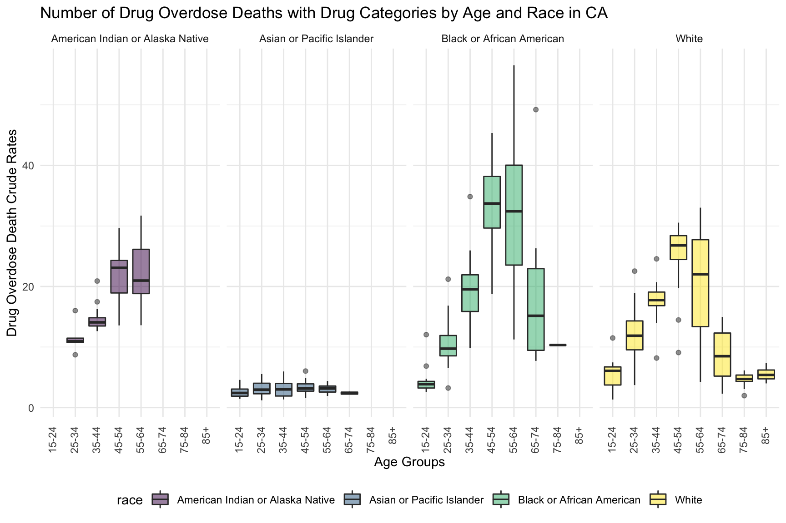
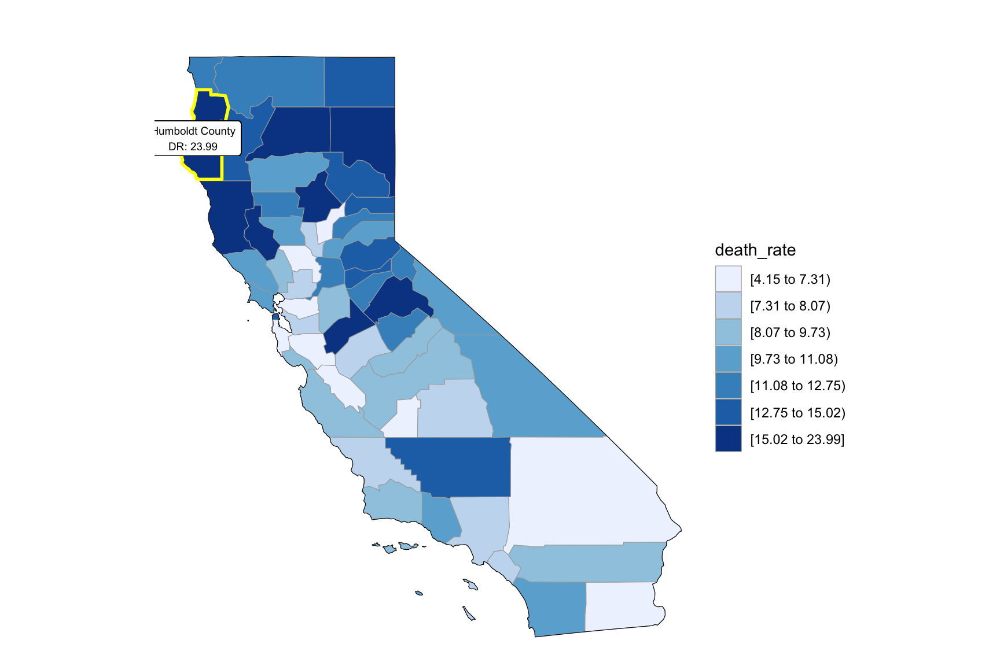
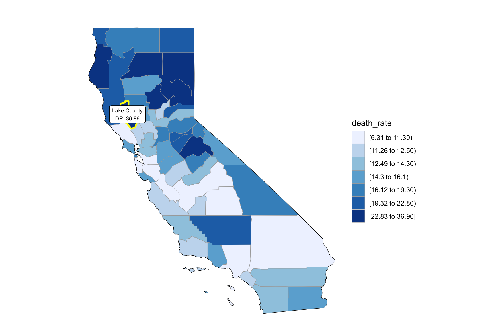

## Adding missing grouping variables: `state_name`By drug type

By year
Each month Death Within a Year
Number of death vs median household income
Income and drug overdose death percent , by year
## Joining, by = "year"
CA Drug Map
## # A tibble: 232 × 4
## county year population death_rate
## <chr> <fct> <dbl> <dbl>
## 1 alameda 2015 1634634 12.3
## 2 alameda 2016 1650306 10.5
## 3 alameda 2017 1658131 8.79
## 4 alameda 2018 1666753 12.0
## 5 alpine 2015 1087 22.1
## 6 alpine 2016 1057 24.8
## 7 alpine 2017 1121 26.5
## 8 alpine 2018 1101 26.6
## 9 amador 2015 37037 23.1
## 10 amador 2016 37438 25.3
## # … with 222 more rows## # A tibble: 58 × 2
## fips county
## <int> <chr>
## 1 6001 alameda
## 2 6003 alpine
## 3 6005 amador
## 4 6007 butte
## 5 6009 calaveras
## 6 6011 colusa
## 7 6013 contra costa
## 8 6015 del norte
## 9 6017 el dorado
## 10 6019 fresno
## # … with 48 more rows